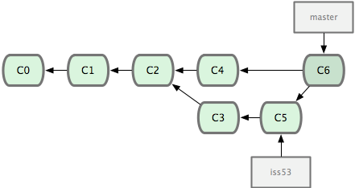

Git - First tasks with repositories¶
Local, single-user, linear workflow¶
Type git to see a full list of all the ‘core’ commands. We’ll now go through most of these via small practical exercises:
!git
git init: create an empty repository¶
%pwd
%%bash
rm -rf test
git init test
Note: all these cells below are meant to be run by you in a terminal where you change once to the test directory and continue working there.
Since we are putting all of them here in a single notebook for the purposes of the tutorial, they will all be prepended with the first two lines:
%%bash
cd test
that tell IPython to do that each time. But you should ignore those two lines and type the rest of each cell yourself in your terminal.
Let’s look at what git did:
%%bash
cd test
ls
%%bash
cd test
ls -la
%%bash
cd test
ls -l .git
Now let’s edit our first file in the test directory with a text editor… I’m doing it programatically here for automation purposes, but you’d normally be editing by hand
%%bash
cd test
echo "My first bit of text" > file1.txt
git add: tell git about this new file¶
%%bash
cd test
git add file1.txt
We can now ask git about what happened with status:
%%bash
cd test
git status
git commit: permanently record our changes in git’s database¶
For now, we are always going to call git commit either with the -a option or with specific filenames (git commit file1 file2...). This delays the discussion of an aspect of git called the index (often referred to also as the ‘staging area’) that we will cover later. Most everyday work in regular scientific practice doesn’t require understanding the extra moving parts that the index involves, so on a first round we’ll bypass it. Later on we will discuss how to use it to achieve more fine-grained control of what and how git records our actions.
%%bash
cd test
git commit -a -m"This is our first commit"
In the commit above, we used the -m flag to specify a message at the command line. If we don’t do that, git will open the editor we specified in our configuration above and require that we enter a message. By default, git refuses to record changes that don’t have a message to go along with them (though you can obviously ‘cheat’ by using an empty or meaningless string: git only tries to facilitate best practices, it’s not your nanny).
git log: what has been committed so far¶
%%bash
cd test
git log
git diff: what have I changed?¶
Let’s do a little bit more work… Again, in practice you’ll be editing the files by hand, here we do it via shell commands for the sake of automation (and therefore the reproducibility of this tutorial!)
%%bash
cd test
echo "And now some more text..." >> file1.txt
And now we can ask git what is different:
%%bash
cd test
git diff
The format of the output above is well explained in detail in this Stack Overflow post. But we can provide a brief summary here:
diff --git a/file1.txt b/file1.txt
This tells us which files changed overall, with ‘a’ representing the old path and ‘b’ the new one (in this case it’s the same file, though if a file had been renamed it would be different).
index ce645c7..4baa979 100644
These are hashes of the file at the two stages, needed by git itself for other operations with the diff output.
The next block shows the actual changes. The first two lines show which paths are being compared (in this case the same file, file1.txt):
--- a/file1.txt
+++ b/file1.txt
The next line indicates where the changes happened. The format is @@ from-file-range to-file-range @@, where there’s one more @ character than there’s parents to the file comparison (git can handle multi-way diff/merges), adn the file range format is -/+<start line>,<# of lines>, with - for the from-file and + for the to-file:
@@ -1 +1,2 @@
Lines prepended with - correspond to deletions (none in this case), and lines with + to additions. A few lines around deletions/additions are shown for context:
My first bit of text
+And now some more text...
The cycle of git virtue: work, commit, work, commit, …¶
%%bash
cd test
git commit -a -m"I have made great progress on this critical matter."
git log revisited¶
First, let’s see what the log shows us now:
%%bash
cd test
git log
Sometimes it’s handy to see a very summarized version of the log:
%%bash
cd test
git log --oneline --topo-order --graph
Git supports aliases: new names given to command combinations. Let’s make this handy shortlog an alias, so we only have to type git slog and see this compact log:
%%bash
cd test
# We create our alias (this saves it in git's permanent configuration file):
git config --global alias.slog "log --oneline --topo-order --graph"
# And now we can use it
git slog
git mv and rm: moving and removing files¶
While git add is used to add fils to the list git tracks, we must also tell it if we want their names to change or for it to stop tracking them. In familiar Unix fashion, the mv and rm git commands do precisely this:
%%bash
cd test
git mv file1.txt file-newname.txt
git status
Note that these changes must be committed too, to become permanent! In git’s world, until something hasn’t been committed, it isn’t permanently recorded anywhere.
%%bash
cd test
git commit -a -m"I like this new name better"
echo "Let's look at the log again:"
git slog
And git rm works in a similar fashion.
Exercise¶
Add a new file file2.txt, commit it, make some changes to it, commit them again, and then remove it (and don’t forget to commit this last step!).
Using remotes as a single user¶
We are now going to introduce the concept of a remote repository: a pointer to another copy of the repository that lives on a different location. This can be simply a different path on the filesystem or a server on the internet.
For this discussion, we’ll be using remotes hosted on the GitHub.com service, but you can equally use other services like GitLab or BitBucket, as well as host your own.
%%bash
cd test
ls
echo "Let's see if we have any remote repositories here:"
git remote -v
Since the above cell didn’t produce any output after the git remote -v call, it means we have no remote repositories configured. We will now proceed to do so. Once logged into GitHub, go to the new repository page and make a repository called test. Do not check the box that says Initialize this repository with a README, since we already have an existing repository here. That option is useful when you’re starting first at Github and don’t have a repo made already on a local computer.
We can now follow the instructions from the next page:
%%bash
cd test
git remote add origin https://github.com/fperez/test.git
git push -u origin master
Let’s see the remote situation again:
%%bash
cd test
git remote -v
We can now see this repository publicly on github.
Let’s see how this can be useful for backup and syncing work between two different computers. I’ll simulate a 2nd computer by working in a different directory…
%%bash
# Here I clone my 'test' repo but with a different name, test2, to simulate a 2nd computer
git clone https://github.com/fperez/test.git test2
cd test2
pwd
git remote -v
Let’s now make some changes in one ‘computer’ and synchronize them on the second.
%%bash
cd test2 # working on computer #2
echo "More new content on my experiment" >> experiment.txt
git commit -a -m"More work, on machine #2"
Now we put this new work up on the github server so it’s available from the internet
%%bash
cd test2
git push
Now let’s fetch that work from machine #1:
%%bash
cd test
git pull
An introduction to branches¶
What is a branch? Simply a label for the ‘current’ commit in a sequence of ongoing commits:

There can be multiple branches alive at any point in time; the working directory is the state of a special pointer called HEAD. In this example there are two branches, master and testing, and testing is the currently active branch since it’s what HEAD points to:

Once new commits are made on a branch, HEAD and the branch label move with the new commits:

This allows the history of both branches to diverge:

But based on this graph structure, git can compute the necessary information to merge the divergent branches back and continue with a unified line of development:

Let’s now illustrate all of this with a concrete example. Let’s get our bearings first:
%%bash
cd test
git status
ls
We are now going to try two different routes of development: on the master branch we will add one file and on the experiment branch, which we will create, we will add a different one. We will then merge the experimental branch into master.
%%bash
cd test
git branch experiment
git checkout experiment
%%bash
cd test
echo "Some crazy idea" > experiment.txt
git add experiment.txt
git commit -a -m"Trying something new"
git slog
%%bash
cd test
git checkout master
git slog
%%bash
cd test
echo "All the while, more work goes on in master..." >> file-newname.txt
git commit -a -m"The mainline keeps moving"
git slog
By default, all variations of the git log commands only show the currently active branch. If we want to see all branches, we can ask for them with the --all flag:
%%bash
cd test
git slog --all
Above, we can see the commit whose message is Try something new, that comes from the experiment branch.
%%bash
cd test
ls
%%bash
cd test
git merge experiment
git slog